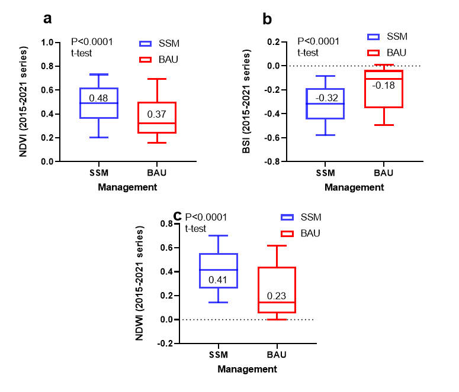

6 Presenting and explaining the GEE results to assess SSM
The following section presents the results obtained from Google Earth Engine and provides an overview of potential conclusions that can be drawn in regards to the example project area. The main objective of this section is to provide an example analysis based on the suggested indices (NDVI, BSI and NDWI).
6.1 Example Project Area
The example area is located in San Juan Nepomuceno, a town and municipality located in the Bolívar Department of northern Colombia. The project started in 2008 and was implemented on an area of 42.4 ha. The example area has undergone change in terms of land use (extensive pasture to a mosaic of silvopastoral areas and perennial crops). The overall greening of the entire project area (Figure 14) was assessed using MODIS based images, while a more detailed comparison between two plots (Figure 15) to assess the effect of silvopastoralism using Sentinel-2 images was performed. The effect of silvopastoralism was assessed by comparing two paddocks with contrasting management from 2010:
- A grazing paddock (1 ha) with a degraded tropical pasture (Business as usual, BAU)
- A paddock (1 ha) with a silvopastoral management, combining improved grass species, shrubs like Leucaena and trees like Glicirida to provide forage during the dry season (Sustainable Soil Management, SSM)
6.2 Interpreting the results
Once the generated dataset is downloaded (e.g. to a spreadsheet format, Step 3, Section 3.1), the data can be analysed in the preferred statistical or graph software (e.g. microsoft Excel, R, Graphpad prism, etc.) to assess The general trend of the project and compare the effects of management practices. In this example, the implementation of silvopastoral systems, improved grazing management, and water catchment surfaces among other practices, increased the overall productivity and vegetation cover of the whole farm. Since the implementation of the project in 2008, there has been a positive trend in NDVI annual averages (Figure 14), as reflected by the MODIS long-term historical products.

Figure 14 Annual NDVI trend sinde the implementation of the project
This can be seen with greater detail , when we compare the results of NDVI, BSI and NDWI for the 2015-2021 series in the two contrasting managements mentioned above. The area with the silvopastoral system (SSM) showed greater NDVI average values (Figure 15a) than the area under extensive grazing (BAU), implying a greater vegetation cover and photosynthetic activity through the analysed period. On the other hand, by providing a greater vegetation cover through the year, SSM practices reduced soil exposure, as shown in Figure 15b. The BSI was greater under BAU practices, with average values closer to the threshold for bare soils/completely exposed soil surfaces (~ 0-0.08; Mzid et al., 2021). SSM practices may have also increased water infiltration and reduced surface runoff, improving water availability for vegetation growth. As shown in Figure 15c, a greater NDWI (i.e. lower water stress) in SSM practices may be reflecting this effect.
 A year to year analysis shows that since 2015, SSM practices increased vegetation cover (higher annual NDVI values, Figure 16a), reduced soil exposure (lower BSI values, Figure 16b) and reduced water stress (higher NDWI values, Figure 16c) compared to BAU practices. Year to year variations correspond to climatic effects, but overall, the introduction of SSM practices showed clear and distinguishable effects through the entire period.
Figure 16 Annual evolution of the Normalized Difference in Vegetation Index (NDVI; a); Bare Soil Index (BSI, b) and Normalized Difference WaterIndex (c) in the 2015-2021 series (Sentinel Products), under Sustainable Soil Management (SSM) and Business As Usual (BAU) practices.
Another way of assessing this management change is by comparing results in years with higher availability of satellite images (2017-2020). During this period, areas under SSM showed greater vegetation cover through the year than BAU areas. This can be reflected by the probability of NDVI of exceeding a specific threshold (e.g. 0.3, indicating vegetated conditions; Fig. 16), in a particular year. In the case of SSM areas, 80-95% of the analysed images (183 in total) indicated vegetated conditions (NDVI > 0.3), with soils being covered by actively growing vegetation through most of the year. On the contrary, BAU areas showed lower percentages, indicating a reduced vegetation cover through the year in all the analysed series.

Figure 17 Annual evolution of the Normalized Difference in Vegetation Index (NDVI; a); Bare Soil Index (BSI, b) and Normalized Difference WaterIndex (c) in the 2015-2021 series (Sentinel Products), under Sustainable Soil Management (SSM) and Business As Usual (BAU) practices.